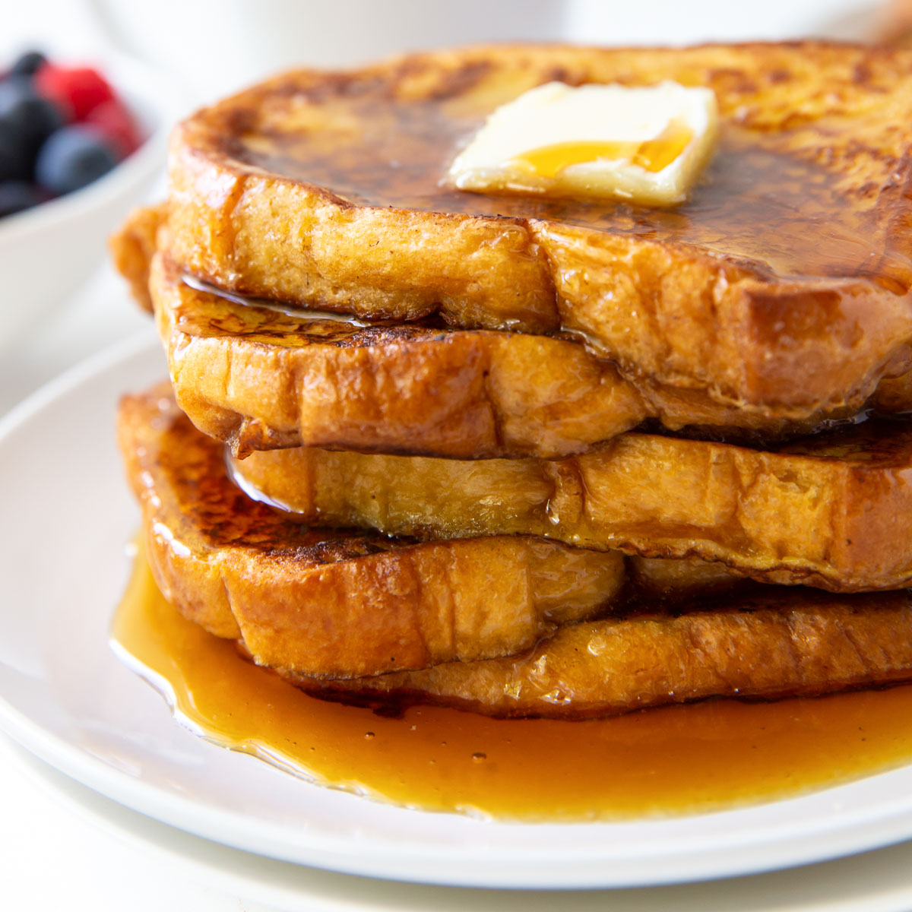

French Toast

Syrupy, Sugary, Buttery
Thrown together with a few staple items in the kitchen,
french toast is a delicious meal for any time of the day.
I use gluten-free bread when I make it (usually Udi brand,
or from my local bakery), but you can use whatever bread
is best for you. When I ate wheat, my favorite was a cheap
loaf of thick Texas-toast style white bread.
Ingredients I Guessed At
- 2 Slices of Bread
- 1 Large Egg
- 1 Cup of Milk
- 1 Teaspoon of Vanilla Extract
- 2 Tablespoons of Powdered Sugar
- 1/2 Stick of Butter
- 1/2 Cup of Berries
Recipe I Guessed At
- Melt a stick of butter in a pan over medium.
- Beat the egg and milk until smooth.
- Add the vanilla extract to the wet mix.
- Soak the slices of bread and fry them in the pan.
- After they start to caramelize, plate them.
- Throw berries / powdered sugar on top and serve!